Bang for the buck, the Duraspark II distributor is hard to beat as a triggering devise for an electronic ignition system. Coupled with either the sock ignition box or an aftermarket control box (such as as the Dyna Module or MSD-6A) it is a tough, readily available, reliable distributor.
Ford began using electronic ignitions in 1973 and introduced the Duraspark II system in 1976. The biggest change, apart from the control box redesign, was the large distributor cap to handle the increased spark energy. The system consists of a magnetic reluctor and pickup in the distributor, and an ignition module to trigger the coil. Typically, the distributors have both mechanical and vacuum advance mechanisms. The curve is reset by using inexpensive springs and adjustable advance units. They are found on both 200 and 250 engines and are interchangeable.
They are a direct fit on older 200/250 engines built after 1964 with the 5/16" oil pump drive shaft. If you want to get one from the auto parts store, make it easy on the clerk and just ask for a distributor from a '78 or '79 Fairmont. Classic Inlines also offers a performance DSII Distributor and Complete Kits, which utilize a full length bronze oil impregnated bushing to provide increased durability and cure top end timing fluctuations which are common in OEM DSII distributors. |
The Duraspark distributor can be wired to various ignition control modules.
-
GM 4-pin module - This makes for a very clean and easy setup. Any of the early mid seventies to early eighties GM cars have this module.
-
Ford Blue Strain Module - When selecting the module, the one to ask for is the one with a "blue strain relief" or the "49 state" module (shown above).
-
Dyna module - with the matching Inferno coil (sold by Classic Inlines) is an excellent choice and easy to wire (shown below).
-
MSD 6A module - or other after market ignition systems. The MSD can be used as a stand-alone or in conjunction with the stock Ford module.
|
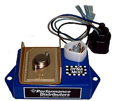 |
Dyna Module
and Inferno Coil
manufactured by Performance Distributors
(click here to purchase)
|
Spark plug gaps may be set much wider with the Duraspark. Using the stock module, set plug gaps between .045" - .060". With an after market module, check the manufacturers recommendation. My 67 coupe uses the MSD6A as a stand-alone with plug gaps of .050", my 66 coupe uses the Dyna Module and Inferno Coil with plug gaps of .055".
The module needs to be mounted on an aluminum or steel backing to dissipate heat, which also grounds the module. The ignition wiring diagram looks daunting but its not really that difficult. Most installs only need two connections. The red wire which is connected to a switched 12V source and the white wire which goes to the start terminal of the ignition switch. The white wire is optional. When used it retards the spark a couple of degrees to reduce the load on the starter (an enterprising hot rodder might hook this up to a nitrous switch to retard the spark when the juice is on). The Dyna and MSD modules come with wiring instructions, were not sure about the GM or Ford module, but would guess they do. If not, they can be found online, as many websites document the installation. |
Installing a Duraspark II Distributor |
ww....What you’ll need: |
- Duraspark II Distributor (new or donor)
- Control Module (new or donor)
- Coil (new or donor)
- Plug Wires (new or donor)
- Wiring or Wire Harness (new or donor)
- Assortment of hand tools
- Assortment of Electrical Tools
- Timing Light
- Tachometer
|
First make sure the battery is disconnected and the transmission is in park, or
neutral. Manually rotate the engine so the rotor lines up with the number one plug
wire, which should be roughly in the 6 o’clock position. To do this you can rotate the
fan
by hand, however you might have to push down on the fan belt to create enough
friction
to
rotate the engine. Once the rotor is lined up properly, remove the distributor
hold
down
and bolt, which is on the right side of the distributor. NOTE: As you remove
the
distributor the firing arm will move clockwise, note its position. |
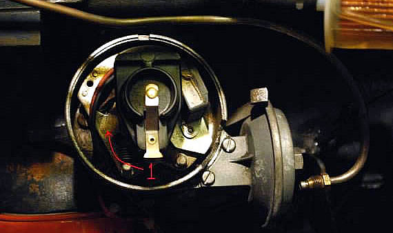
Before you drop the DSII distributor into the block, set the rotor to
the
approximate
spot where it was when you pulled the old distributor
(starting
with the position you
noted when pulling
the dizzy). As the
distributor
drops into
place, the arm should move counter clockwise, returning
to the 6 o’clock
position.
Replace the distributor hold down and bolt, and lightly tighten. |
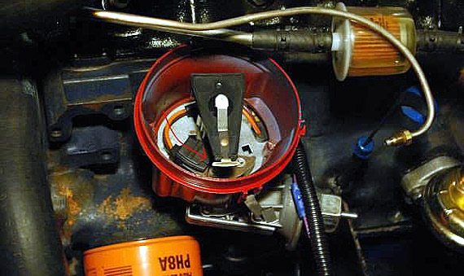
While the drivers side fender wall (in front of the shock tower)
is a popular spot, most manufacturers suggest mounting the
ignition
box
under the dash, in a safe, cool location. |
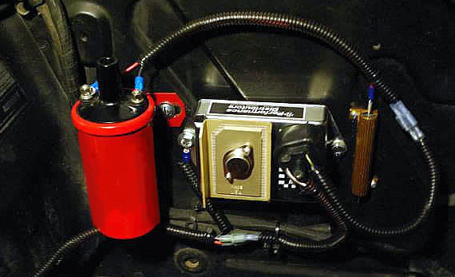
The updated version of the "Dyna Module Ignition Kit, available from Classic Inlines, is now painted in Ford Blue powder coat
and includes the new "Inferno 2" high performance coil.
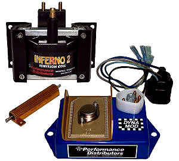
Here’s a rough drawing of the wiring diagram for my 67 Mustang. First lets cover
some
of the basics behind the wiring. The solenoid is a switch that powers both
the
starter
and
a full 12v to the coil. The switch is closed by sending 12v to the “S”
terminal,
so
when you turn the ignition to “start” you close that switch, sending
power to the start
and the coil. Because the points could only handle 6v without
burning up Ford installed
a pink resistor wire, more on that latter.
When starting the engine, the coil needs a full 12 volts. In order to do that, Ford
bypassed the resistor during cranking. When the solenoid closes it also sends
12v
to the “I” terminal, through the brown wire, and up through the red wire to the coil.
While the engine is running the solenoid
is open, 6v is sent through the resistor,
through the red wire, to the coil. It also back-feeds 6v to the “I” terminal.
NOTE: It is very important to remove the back feed wire, otherwise you risk wearing
out the solenoid, which will send 12v back through the blue wire and possibly burn
up the wires under the dash. And everything else, including your car. |
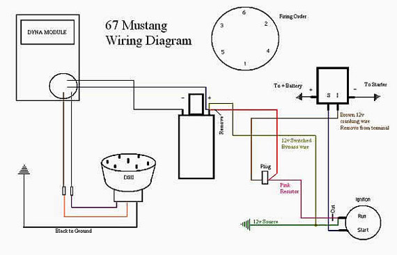
So now that we have an idea of how the old system worked, lets wire our new setup.
First make sure the battery is disconnected and it’s safe to work. Next pull the ignition
out so you can work with it. I will not detail this step because of the many different
setups there are. Once out locate your pink resistor wire, keep in mind after 40+
years
and multiple paint jobs it might not be so pink. Luckily for me mine was very
well marked. Cut or remove the pink wire, if you cut it make sure to properly end the wire
so it doesn’t short anything out. Now you can either connect to a 12v ignition source
to the coil or splice into a 12v wire. Run this new wire, yellow
in my diagram, through the firewall and to the coil, if needed install the resistor that came with Dyna Module kit. Keep in mind those using other modules may not need this resistor. Remove and cut the old wire running to the coil and remove the brown wire coming off the “I” terminal, again making sure the wires are not exposed. Now lets test it all, you will need a helper. With the battery connected turn the ignition to the run position. Test to see that your getting 12v to the “+” terminal on the coil. Now disconnect the wire going
to the starter from the solenoid. Have your helper hold the ignition in the start position. Again make sure your getting 12v to both the “+” terminal on the coil as
well as the “I” terminal on the solenoid. If not you car is worthless, if that’s the
case I would be happy to buy it from you for next to nothing. If that won’t work
for you rework it and retest.
If you still can’t figure it out that’s what the forum is for. |
The colors I refer to, are the colors in my diagram.
The
actual wire colors in your vehicle may vary.
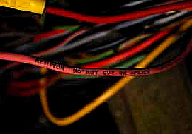 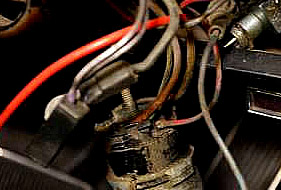
Reconnect everything and put it all back together, remember your new Duraspark needs different plug wires. Use the ones from the donor, or get a set from your local parts store just ask for the wires from the same vehicle and year you pulled the parts from, or a mid 70’s Fairmont. This is also a good time to make sure you have a step colder than stock plugs gapped at .045 - .055. Start with the lower number, drive it, and decide if you can
go bigger. When setting your advance you may need some one to crank the engine over while you adjust the distributor until you can get it in the ballpark. Set your advance either using a timing light or even better a vacuum gauge. This can be done by connect a vacuum gauge to a manifold source, disconnecting the vacuum advance and plug its source starting the engine and rotating the distributor clockwise or counter clockwise (counter clockwise for more advance, clockwise for less) until you get the highest steady vacuum reading,
then back off 1-2 in Hg. Shut down the engine, tighten down the distributor hold down
bolt, and recheck it to make sure it didn’t move while tightening. |
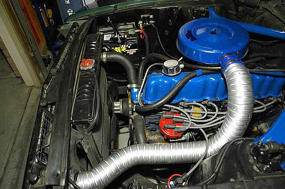
Now to go one step further, track the new curve on the DSII. You will need a tachometer, dial back timing light, graph paper, and a friend. First note what your initial advance was and what RPM’s you were running. Next start the motor and check the timing with the vacuum advance disconnect connected at idle. Increase engine speed by increments of
500 RPM, noting the total combined advance at each step. You may need to dial back the timing light to keep the timing notch within the numbers. Continue to increase engine speed until about 3000 RPM. The goal is about 32-35 degree’s of total advance in before 3000 RPM. |
Written by FordSix member: flash_point01
Re-curve the Duraspark II for Improved Mileage |
If you have a DuraSpark II distributor, you also have smog-control spark advance curves inside. All of the DuraSpark units came this way, to reduce hydrocarbons. Unfortunately, it also reduces MPG. However... today's gasoline reduces the hydrocarbons for you, even more than the slow spark curve did. So, get a set of the Mr. Gasket #925D distributor springs and modify your distributor as follows:
First, remove the lighter of the 2 springs in the DII and replace it with one of the #925D springs. DO NOT replace both springs with the #925D springs (more on that in a moment). Next, there is a support arm that holds the larger spring, on it's non-slotted end. Bend this arm in toward the center of the distributor, just 3/32 of an inch.
This combination replicates the "police interceptor" distributor spark curve for the 200 I-6, according to a local "guru" who helped build these for Ford in the early 1980s. It causes earlier spark advance up to 1200 RPM, which then remains steady until 1800 RPM, when the secondary spring starts its advance. This "plateau" of early advance, limited by the 3/32" inward adjustment of the heavier spring, provides more torque at around-town speeds. This improves your MPG because you don't have to open the throttle as far to get the same speeds you were running before. You'll also notice better off-the-line pep and cold-running performance. Mine also starts a little better when hot, and the plugs stay cleaner. My in-town MPG rose from 16.5 average to 18.1 average over 2 tanks of gas, winter driving to and from work. I haven't tested the highway MPG yet, but I don't think it will improve from the 23+ I've been getting. I'll re-post if it does.
If you make the mistake of replacing BOTH springs in your DII with the #925D springs, you will get a SLOWER spark curve unless you extensively modify one of them to provide a "slot", like the heavier spring already has. But I found, even after that exercise, that the engine "hit the wall" at about 2200 RPM and would not accelerate well up hills. Adding in the heavier spring, but delaying its effect until 2000 RPM, did the trick: now it loves to rev, even on regular gas (my compression is about 9.4:1). The maximum advance is reached at 2600 RPM on my engine with this mod: before, the max advance was at 3200 RPM.
Written by FordSix member: Mark P.
Rebuilding a Use Duraspark II Distributor |
If you prefer to rebuild the distributor yourself, rather than purchasing
a
new
or
refurbished distributor, start by finding a 1978 or later donor vehicle.
Since
they came
from the factory with the Duraspark II ignition, make sure you
get
all
of
the
associated parts, including the coil and horse-shoe connector, the plug wires,
spark
plugs,
wiring
harness, control module, and as much
of the wiring as possible.
The
recycler
I used
already had the distributor from a 78 Fairmont pulled and ready to
go.
However the
control module and wiring harness wasn’t available, so I purchased
a new Dyna module from Classic Inlines, rather than buying a stock 78 Ford module. Here is a picture of my restored Duraspark, painted red.
While you disassemble the distributor, make sure all of the parts
are clean,
move freely,
and that the bushing is in good condition. |
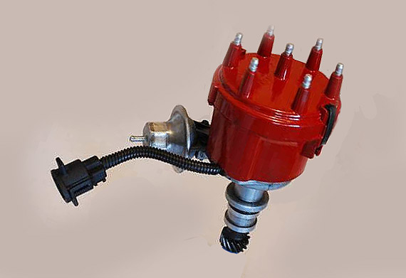
First, remove the distributor cap base to expose the breaker plate.
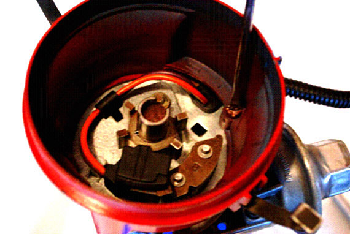
Next, remove the vacuum canister from the distributor.
After removing two screws, the arm should just slide off the pin.
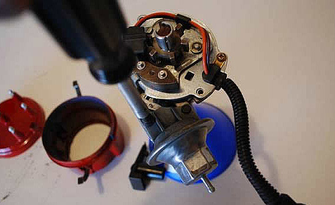
Remove the reluctor by prying upward with two screwdrivers, making sure the
blades
are against the base, not the teeth. If this doesn’t work for you, try the next step.
NOTE: When pulling the reluctor be careful not to lose the pin holding it in place.
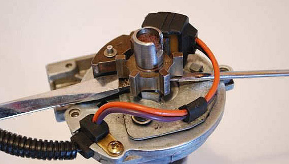
By cutting the arm off an Allen wrench, I was able to use it as a punch, to push the pin
downward through the reluctor. However, a small nail set or punch would be better suited.
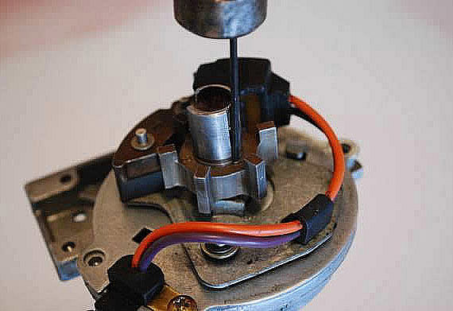
Remove the top half of the breaker plate and clean under it, then reassemble.
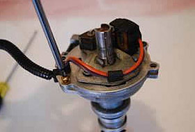 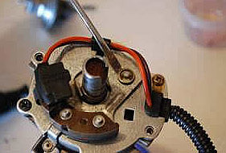
Remove the two screws holding down the breaker
plate
and remove it exposing the mechanical advance.
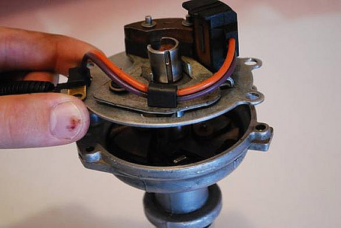
Toughly clean all moving parts and ensure that that operate easily. Replace the lighter spring with one of the springs from the Mr. Gasket Re-curve Kit # 925D, which I purchased from Jegs. Then move the arm from the heavier spring 3/32 of an inch towards the center.
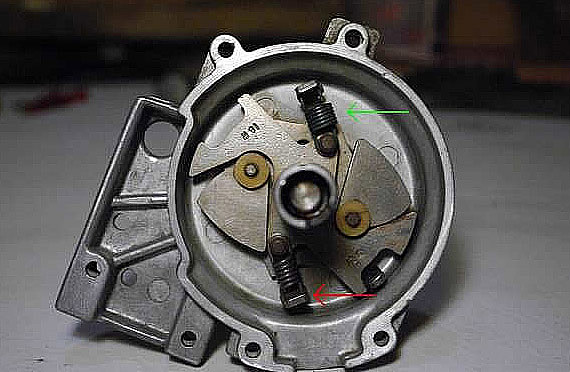
After replacing the breaker plate, replace the reluctor and pin. I had
to use the Allen wrench again to push the pin back into place. After
the pin is reset, use a spark plug socket to tap the reluctor into place.
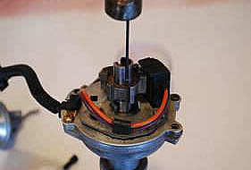 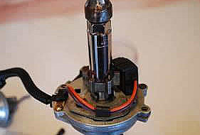
Completely reassemble the distributor, by reversing the steps for disassembly.
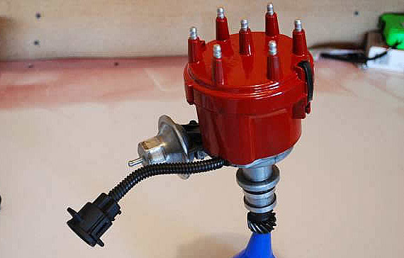
Written by FordSix member: flash_point01

Click here to purchase the DSII and/or Dyna Module Kit offered by Classic Inlines |
  
|